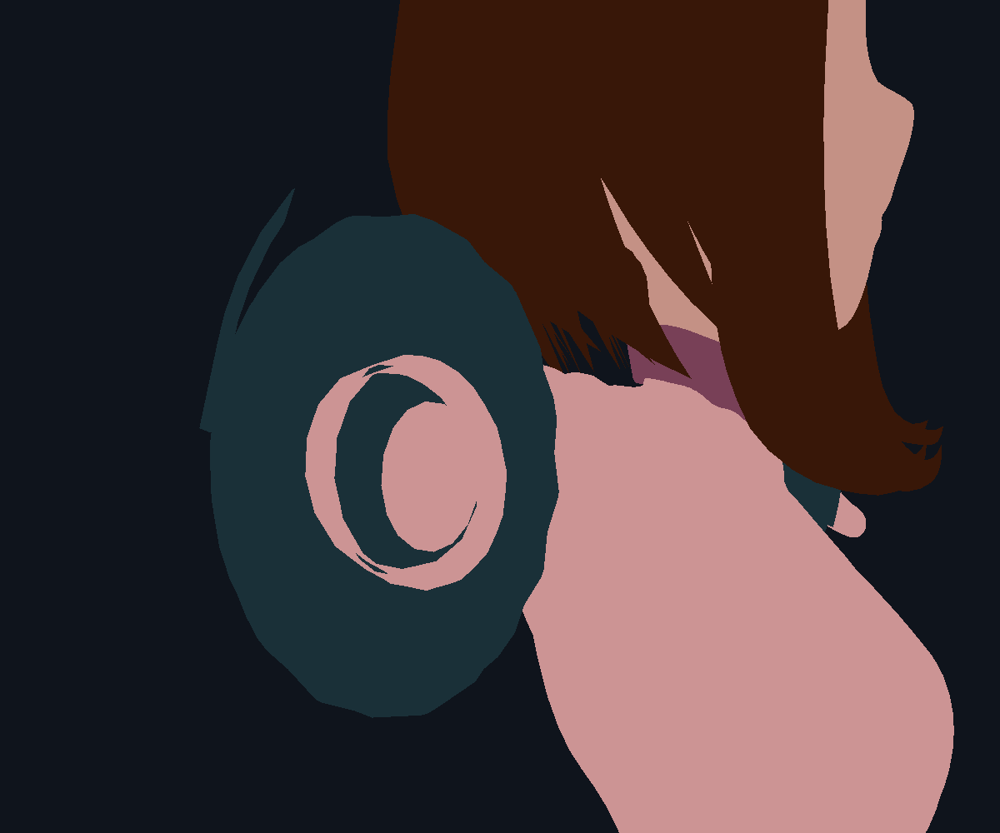
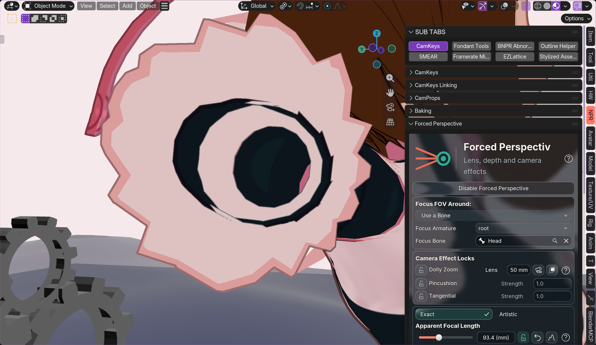
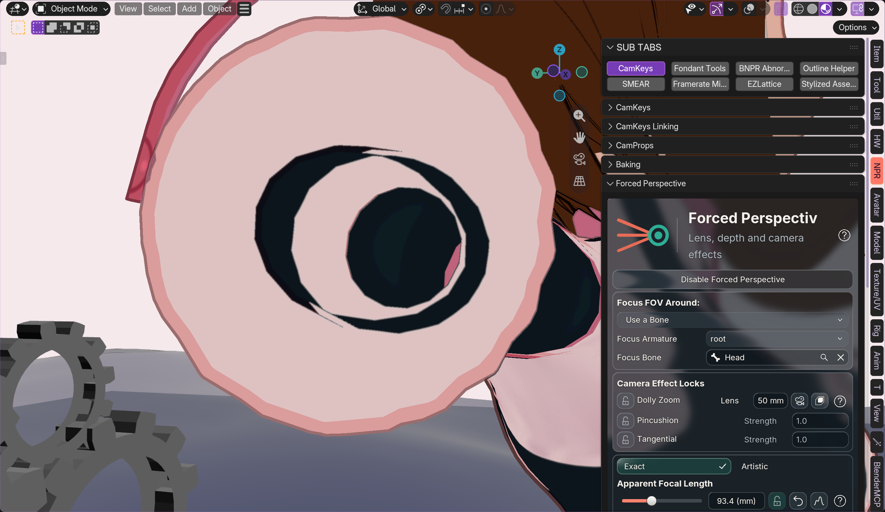
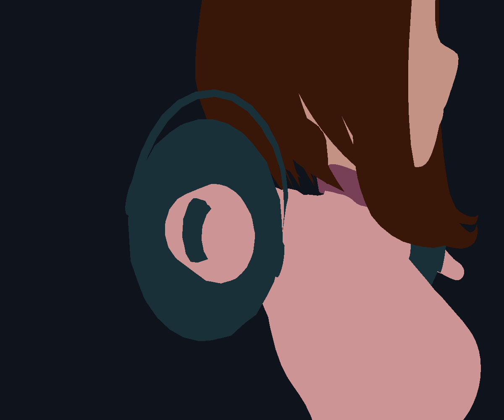
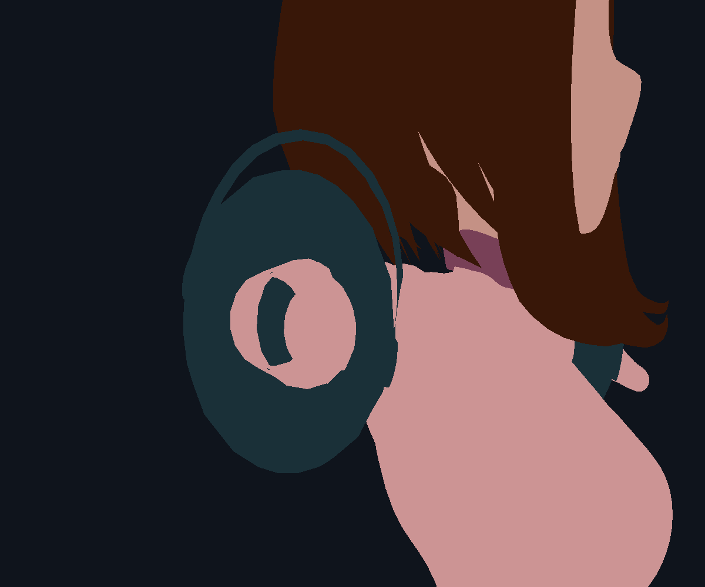

Saved view — 142.07 mm
Flat diagnostic shading, all 68,185 vertices and 135,206 triangles retained.


Original topology · native camera clipping · bounded deformation adjustment · schema 25
Same view, lens, curves and captured shadow data. Intentional thin outline slivers remain.


Flat diagnostic shading, all 68,185 vertices and 135,206 triangles retained.



The 215–250 mm protection is retained. Full 250 mm output is numerically identical to the previous graph in this fixture.
32,001-point retained update: approximately 1.67–1.70 ms before, 1.75–1.95 ms after. No added vertices, face deletion, Python scans, GPU readbacks or production timers. These are geometry timings, not viewport FPS.
56 checks pass across Blender 4.2–5.2. Actual Metal evidence shown above; physical Windows replay remains open. The narrow band changes local thickness; arbitrary collision freedom and full-scene motion acceptance are not claimed.
Measurements · Method, precision fallback and limitations